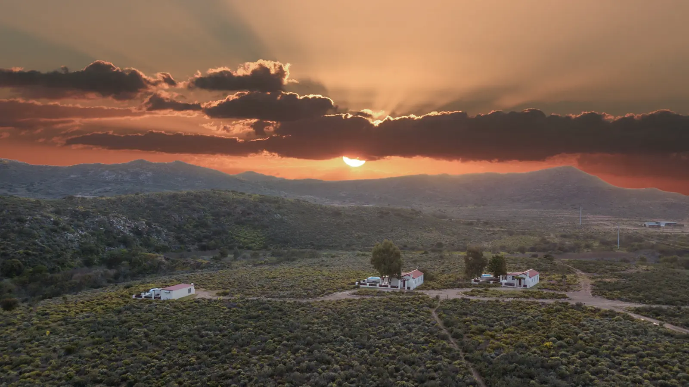
Accommodationin Montagu,on the farm.
Five self-catering cottages, six glamping hideaways and twelve private campsites on a 50 hectare guest farm, 14 km from Montagu on Route 62.
Where to stay near Montagu, with room to breathe.
Glen Eden Farm is a 50 hectare smallholding on Route 62, 14 km outside Montagu. Close enough to drive into town for the hot springs, restaurants and wine farms, far enough that the evenings are just the fire, the stars and the sound of the veld.
Everything here is self-catering, and there is a stay for every kind of trip. Couples take Fish Eagle or one of the gypsy wagon pods. Families book Sugarbird or Blue Crane House, which sleeps eight. Campers and caravanners pitch on one of twelve private campsites.
What every stay comes with
Each cottage, glamping unit and campsite has its own wood-fired hot tub, plus free, unlimited WiFi. The cottages add a private garden, splash pool, indoor fireplace and a covered braai. Dogs are welcome in the cottages when arranged at booking, see pet-friendly stays.
And plenty to do without leaving
The touch farm (alpacas, donkeys, goats, pigs and more) is fed twice a day and guests are welcome to help. There is a pool and play area, hiking trails, a fishing dam, a rowing boat, an archery range and Beaney Peanut, the farm's licensed bar for gourmet pizza and Bootlegger coffee.
Choose your spot.
Five cottages, six glamping units and two campsites. Tap any one for photos and the full list of what is included.
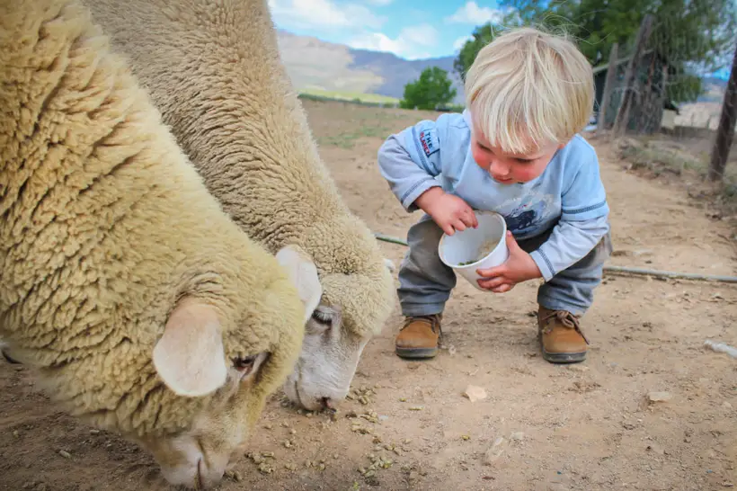
The farm is the activity.
- ✦Touch farmFeed the animals with us twice a day.
- ✦Pool and play areaDay beds, loungers, a jungle gym and a big red tractor.
- ✦Hikes, fishing and a rowing boatTrails across the farm, a fishing dam and a smaller dam to row on.
- ✦Archers of EdenInstruction and kit included, ages 7 and up.
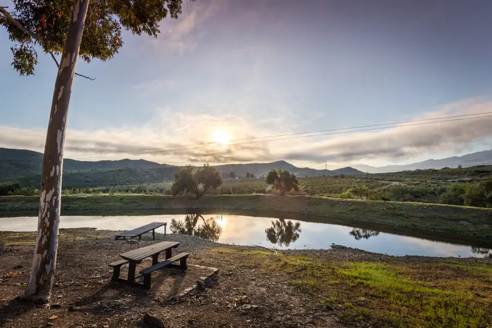
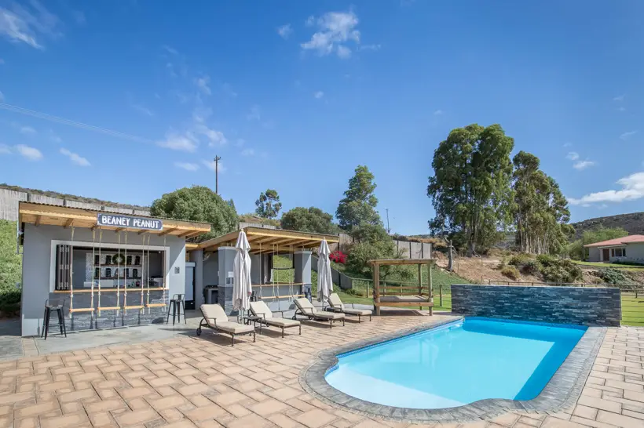
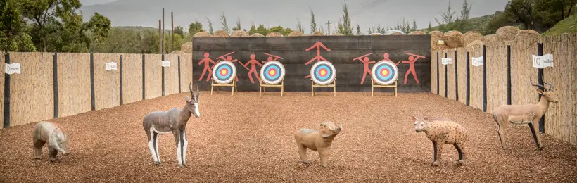
How far is Glen Eden Farm from Montagu?
14 km. Drive through Montagu on Long Street, past the Spar and the Caltex on your right, and continue 14 km on the R62 towards Barrydale. The farm is on the left, just before the green "Ruigtevlei" road sign.
Is the accommodation self-catering?
Yes. The cottages have fully equipped kitchens, the glamping units have their own kitchens, and the campsites have braais plus shared or private kitchen facilities. Beaney Peanut on the farm serves pizza, burgers, coffee and drinks.
Does every unit have a hot tub?
Yes. Every cottage, glamping unit and campsite has its own wood-fired hot tub. The cottages also have a splash pool.
Can I bring my dog?
Dogs stay free in the cottages when arranged at booking, at the owners' discretion. One campsite, "Valley" at Mountain View, is pet friendly. The glamping units and Little Eden campsite are pet free.
Is there WiFi?
Yes, free and unlimited, at every unit including the campsites.
How do I book?
Check live availability and book online, or WhatsApp 071 100 2782. A 50% deposit by EFT secures the booking.
Not quite right?
Every option on the farm comes with a private wood-fired hot tub.
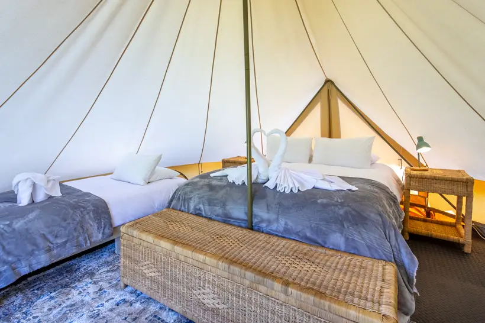
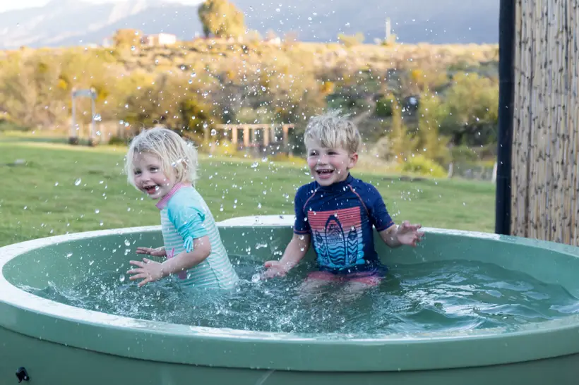
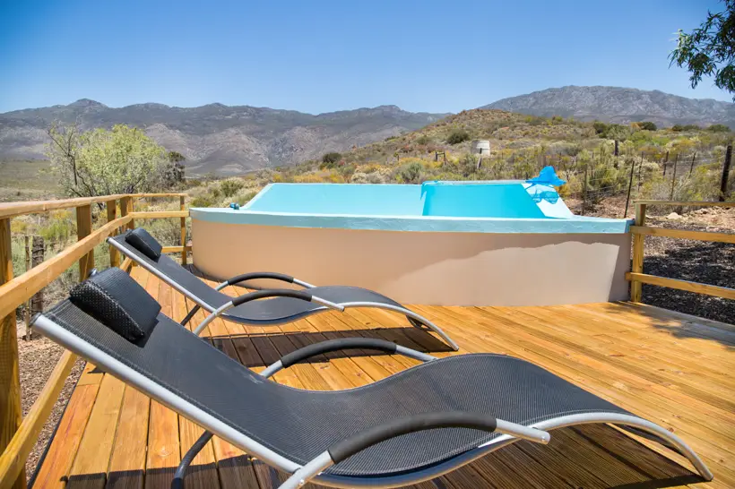
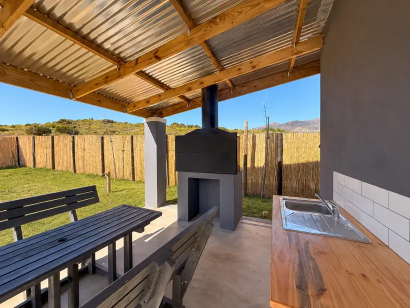
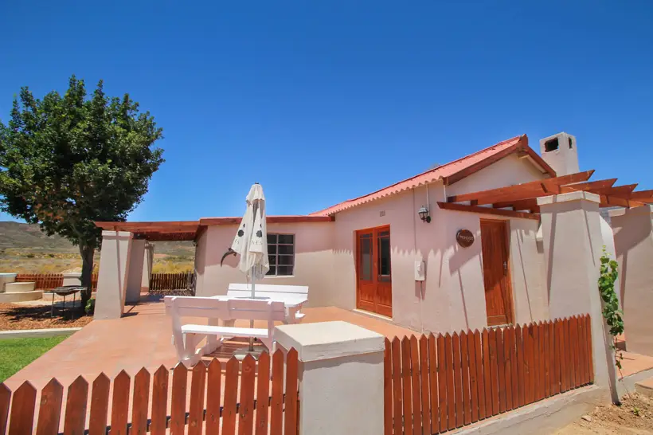
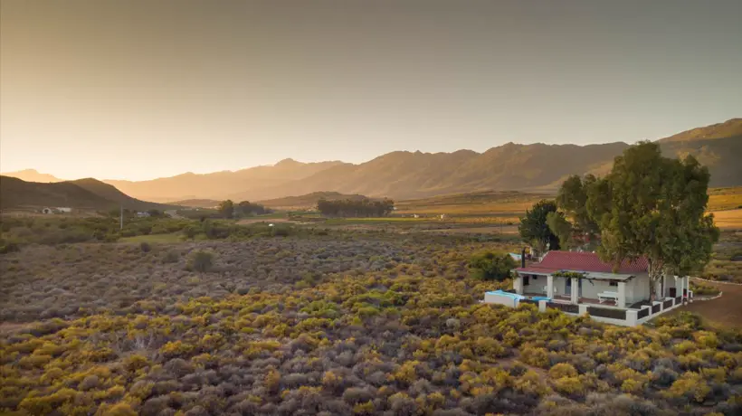
Your corner of the farm is waiting.
Check live availability in seconds, or send us a WhatsApp and we will help you pick the right spot.